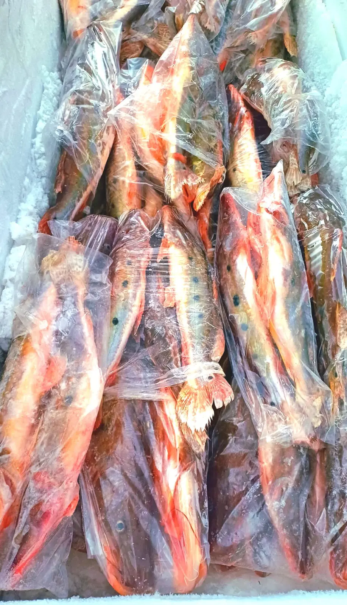
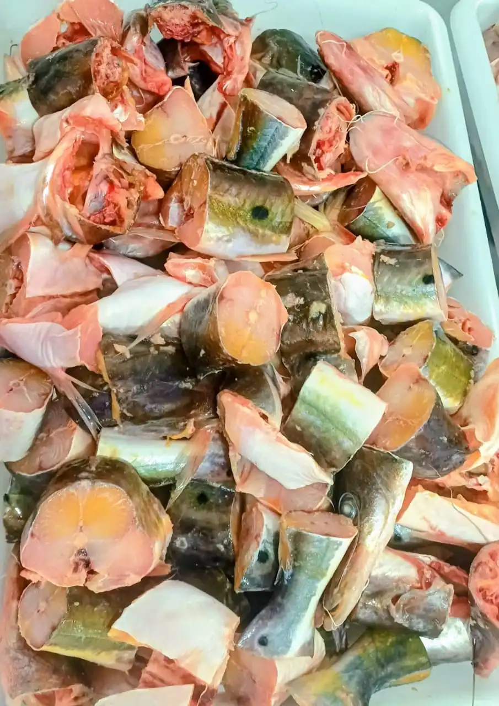

Jurupoca
Hemisorubim platyrhynchos
Escolha o Corte:
Retire na loja: R. Bom Jardim, 379 — Centro, Cáceres.
Jurupoca: O Peixe Adocicado das Margens do Rio Paraguai
A Jurupoca (Hemisorubim platyrhynchos) é um dos peixes de escama mais queridos pelos pescadores e cozinheiros da região de Cáceres e de toda a bacia do Rio Paraguai. De porte médio — pesando entre 500g e 2 quilos na fase adulta —, ela pertence à mesma família do Pacu e da Pacupeva, mas se diferencia pelo sabor levemente adocicado da carne, resultado de uma dieta baseada em frutos nativos, sementes e raízes que caem nas margens alagadas durante o período de cheia do Pantanal mato-grossense. Esse hábito alimentar confere à sua carne uma doçura natural e um aroma único que os cozinheiros experientes da região sabem aproveitar com maestria.
A Grande Vantagem: Sem as Espinhas em Y
Entre os peixes de escama nativos do Rio Paraguai, a Jurupoca se destaca por uma característica muito valorizada na cozinha: a ausência quase total das espinhas intermusculares em formato de "Y" que tanto incomodam em espécies como a traíra ou o dourado. Isso a torna uma escolha segura e prática para famílias com crianças, idosos e para quem não tem o hábito de lidar com espinhas. A carne é macia, de coloração branca e responde muito bem ao calor — frita, fica dourada e crocante por fora, incrivelmente suculenta por dentro, sem que o comensal precise ficar navegando entre espinhos durante a refeição.
Como Preparar a Jurupoca: Receitas da Culinária Pantaneira
A Jurupoca é extremamente versátil na cozinha. Os preparos mais populares entre as famílias de Cáceres e das margens do Rio Paraguai incluem:
- Jurupoca Frita Inteira: Temperada com sal grosso, limão e alho amassado, frita em óleo bem quente até dourar por completo. Servida com mandioca cozida e arroz branco — o prato mais clássico e pedido às margens do rio.
- Ensopado Pantaneiro: As postas são refogadas com tomate, pimentão, cebola, coentro e pimenta-de-cheiro. O caldo fica levemente adocicado pela carne do próprio peixe, servido numa tigela funda e fumegante.
- Jurupoca na Brasa: Postas grossas temperadas com sal grosso e limão, assadas diretamente sobre brasas de madeira. O leve defumado contrasta muito bem com a doçura natural da carne.
- Caldeirada com Legumes: Jurupoca em postas cozida com batata, cenoura, chuchu e ervas frescas — prato completo, nutritivo e ideal para o almoço de domingo em família.
Disponibilidade e Como Encomendar
A Jurupoca é um peixe sazonal, com presença mais constante no período de águas altas do Rio Paraguai, entre outubro e março. Fora desse período, a disponibilidade pode variar conforme a pesca do dia. Na Peixaria Rio Paraguai, em Cáceres-MT, a Jurupoca é comercializada fresca — inteira e limpa ou em postas —, sempre capturada dentro dos períodos e limites permitidos pela legislação ambiental de Mato Grosso. Consulte a disponibilidade pelo WhatsApp antes de vir até a loja e garanta a sua porção do melhor peixe adocicado do Pantanal.